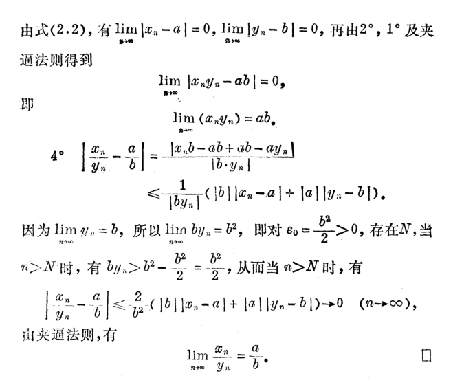

微积分（一）总结 PART I
本文简要梳理了微积分（一）的一些内容, 并记录一些套路.
分析基础
界, 确界
(上, 下)界, 有界.
确界: 若 \(\alpha\) 是 \(A\) 的上确界(即 \(\alpha = \sup A\)), 那么:
一方面, \(\alpha\) 是上界, 即 \(\forall x\in A, x \le \alpha\).
另一方面, \(\forall \varepsilon>0, \exists x_0\in A\) 使得 \(\alpha-\varepsilon<x_0\). (不可再小)
证明与上下确界有关的不等式需要根据定义, 如证明 \(\sup\limits_{x\in X, y\in Y}\lbrace x+y\rbrace =\sup\limits_{x\in X}\lbrace x\rbrace +\sup\limits_{y\in Y}\lbrace y\rbrace\) 等式子.
几大互相等价的定理
1. 实数的连续性原理
若 \(A, B\) 为非空实数集, 且 \(\forall x\in A, \forall y\in B, x\le y\), 则 \(\exists c\in \mathbb R\) 使得 \(\forall x\in A, \forall y\in B, x\le c\le y\).
2. 确界存在定理
若 \(A\) 非空有上(下)界, 则 \(A\) 必有上(下)确界.
3. 单调有界定理
若 \(\lbrace a_n\rbrace\) 单调递增/减且有上/下界, 则 \(\lbrace a_n\rbrace\) 收敛(为 \(\sup \lbrace a_n\rbrace\) / \(\inf \lbrace a_n\rbrace\))
函数版: 若 \(f\) 是定义在 \(I\) 上的单调有界函数, 则 \(f\) 在 \(I\) 上任一点都存在有限的单侧极限.
4. 闭区间套定理
若 \(\lbrace [a_n, b_n]\rbrace\) 是一列闭区间, 且满足 \([a_1, b_1]\supset [a_2, b_2]\supset\cdots \supset [a_n, b_n]\supset \cdots\), 及 \(\lim\limits_{n\to \infty}(b_n-a_n)=0\). 则存在唯一 \(c\in [a_n, b_n]\), 使得 \(\lim\limits_{n\to \infty}a_n=\lim\limits_{n\to\infty}b_n=c\).
5. 收敛子列定理
有限数列必存在收敛子列.(但是收敛的值不一定唯一)
6. 柯西收敛准则
\(\lbrace a_n\rbrace\) 收敛等价于 \(\forall \varepsilon > 0, \exists N > 0, \forall m, n>N, |a_m-a_n|<\varepsilon\).
函数版:
- \(\lim\limits_{x\to a}f(x)\) 存在等价于 \(\forall \varepsilon > 0, \exists \delta > 0, \forall x_1, x_2\in U^o(a, \delta), |f(x_1)-f(x_2)|<\varepsilon\).
- \(\lim\limits_{x\to \infty}f(x)\) 存在等价与 \(\forall \varepsilon > 0, \exists N > 0, \forall x_1, x_2\) 满足 \(|x_1|>N, |x_2|>N\), 有 \(|f(x_1)-f(x_2)|<\varepsilon\).
7. 有限覆盖定理
闭区间的一个覆盖必存在有限子覆盖.
一些互相证明
下面是上课讲的:
1 推 2 非空数集与它的上界组成的集合之间, 由实数的连续性原理, 夹着一个 \(c\), 一方面 \(\forall x\in X, x\le c\), 故 \(c\) 为上界; 反设 \(c\) 不是上确界, 那么存在 \(\varepsilon > 0, \forall x\in X, x\le c-\varepsilon\), 故 \(c-\varepsilon\) 也是上界, 故 \(c\le c-\varepsilon\), 矛盾.
2 推 3 (证递增上界的情况)数列有上界则有上确界 \(A\), 则对任意 \(\varepsilon>0\) 存在 \(N\), 使得 \(A-\varepsilon< a_N\le A\), 故当 \(n>N\) 时 \(A-\varepsilon<a_N\le a_n\le A<A+\varepsilon\), 故极限存在为 \(A\).
3 推 4 \(\lbrace a_n\rbrace\) 递增且上界存在为 \(b_1\), \(\lbrace b_n\rbrace\) 递减且下界存在为 \(a_1\), 分别设两数列极限为 \(A, B\). 由 \(\lim\limits_{n\to \infty}(b_n-a_n)=0\) 可得 \(A=B=c\), 且 \(\forall n, a_n\le c\le b_n\). 设另有 \(c'\) 使得 \(a_n\le c'\le b_n\), 则 \(|c-c'|\le b_n-a_n\), 由极限保号性得 \(|c-c'|\le 0\), 故 \(c=c'\).
4 推 5 设数列为 \(\lbrace x_n\rbrace\), 从 \([-M, M]\) 开始使用二分法(即套用闭区间套定理), 构造得到区间套 \([l_n, r_n]\), 因为左右区间至少有一个是无穷多项, 选择无穷多项的一边一直下去, 最后收敛到一个点 \(c\). 因为每个 \([l_n, r_n]\) 中都有无穷多项, 所以我们如下构造 \(a_{n_k}\): 在 \([l_k, r_k]\) 的范围内挑选一个 \(a_{n_k}\), 满足 \(n_k>n_{k-1}\). 这是显然可以做到的, 因为 \(n_{k-1}\) 前只有有限项. 于是我们得到 \(l_k\le a_{n_k}\le r_k\), 取极限得 \(a_{n_k}\to c\).
5 推 6 证明柯西收敛准则: 一方面, 左推右, 由绝对值不等式显然. 另一方面, 右推左. 取 \(\varepsilon_0=1\), 则存在 \(N_0>0, \forall n>N_0, |a_n-a_{N_0+1}|<1\), 故可得 \(\lbrace a_n\rbrace\) 有界, 故有收敛子列 \(\lbrace a_{n_k}\rbrace \to A\). 于是对任意 \(\varepsilon>0\), 存在 \(N>0\), 因 \(a_{n_k}\) 无穷多项, 故存在 \(n_{k_0}>N\), 满足 \(\forall n>N\), \(|a_n-a_{n_{k_0}}|<\varepsilon/2\). 然后由绝对值不等式易得.
4 推 7 反证 \([a, b]\) 不能够有限覆盖, 二分, 则左右区间至少有一个不能够有限覆盖. 得到一系列 \([l_n, r_n]\)(闭区间套)均不能被有限覆盖, 由闭区间套定理可得 \(\lbrace l_n\rbrace, \lbrace r_n\rbrace\) 收敛于 \(c\). 取覆盖 \(c\) 的覆盖 \((c-\alpha, c+\beta)\), 取 \(\varepsilon=\min(\alpha, \beta)\), 那么存在 \(N>0\), 当 \(n>N\), \([l_n, r_n]\subsetneqq (c-\varepsilon, c+\varepsilon)\subseteq (c-\alpha, c+\beta)\), 故可以被有限覆盖(1 个), 矛盾.
6 推 4 \(\forall \varepsilon>0\), \(\exists N>0\), \(\forall n>N\), 有 \(0\le b_n-a_n<\varepsilon\). 对 \(\forall m\ge n>N\), 有 \(a_n\le a_m\le b_m\le b_n\), 那么 \(|a_m-a_n|=a_m-a_n\le b_n-a_n<\varepsilon\). 由柯西收敛准则, \(\lbrace a_n\rbrace\) 极限存在. 同理 \(\lbrace b_n\rbrace\) 极限存在. 后续证明同 "3 推 4".
6 推 3 (证单调递增有上界的情况) 反设 \(\lbrace a_n\rbrace\) 无极限, 则 \(\exists \varepsilon>0\), \(\forall N>0\), \(\exists n>m>N\), \(|a_n-a_m|\ge\varepsilon\), 即 \(a_n\ge a_m+\varepsilon\). 由于 \(N\) 的任意性, 适当选取 \(N\) 后可得 \(\lbrace a_{n}\rbrace\) 的子列 \(\lbrace a_{n_k}\rbrace\), 满足 \(a_{n_{k+1}}\ge a_{n_k}+\varepsilon\), 那么 \(a_{n_k}\ge a_{n_{k-1}}+\varepsilon\ge \cdots \ge a_{n_1}+(k-1)\varepsilon\). 故 \(\lim\limits_{k\to\infty}a_{n_k}\ge \lim\limits_{k\to\infty}(a_{n_1}+(k-1)\varepsilon)=+\infty\). 故子数列无界, 则原数列也无界, 矛盾.
4 推 2 (证上界的情况) 由于 \(S\) 非空, 取 \(a\in S\), 若 \(a\) 为 \(S\) 上界, 则 \(a\) 为上确界, 证毕. 故设 \(a\) 不为 \(S\) 上界. 由 \(S\) 存在上界, 设为 \(b\). 若 \(b\in S\) 则证毕. 故设 \(b\notin S\). 故可知存在 \(x\in S\), \(a<s<b\). 以此为 \([a_1, b_1]\), 二分出区间套 \([a_n, b_n]\) 满足 \(a_n\) 不为 \(S\) 上界, \(b_n\) 为 \(S\) 上界, 且存在 \(x_n\in S\) 满足 \(a_n<x_n<b_n\). 由闭区间套定理, \(\lbrace a_n\rbrace \to c\), \(\lbrace b_n\rbrace \to c\). 由于 \(b_n\) 是 \(S\) 上界, 故 \(\forall x\in S, x\le b_n\), 由极限的保号性有 \(x\le c\). 故 \(c\) 为 \(S\) 上界. 由极限的定义, \(\forall \varepsilon>0\), \(\exists N>0\), \(\forall n>N\), \(c-\varepsilon<a_n<b_n<c+\varepsilon\), 又存在 \(x_n\in S\), \(a_n<x_n<b_n\), 故 \(c-\varepsilon<x_n\), 从而 \(c\) 是上确界.
常用的等式、不等式
展开
这些不等式在后面都用得着.
极限定义
数列极限: \(\lbrace a_n\rbrace\) 为一数列, 若 \(\forall \varepsilon > 0, \exists N>0, \forall n>N, |a_n-A|<\varepsilon\), 则 \(\lim\limits_{n\to \infty}a_n=A\).
函数定义1: \(f(x)\) 在 \(U^o(x_0)\) 有定义, 若 \(\forall \varepsilon > 0, \exists \delta>0, \forall x\in U^o(x_0, \delta), |f(x)-A|<\varepsilon\), 则 \(\lim\limits_{x\to x_0}=A\).
函数定义2: \(f(x)\) 在 \([b, +\infty)\) 有定义, 若 \(\forall \varepsilon > 0, \exists H > 0, \forall x > H, |f(x)-A|<\varepsilon\), 则 \(\lim\limits_{x\to +\infty}=A\).
上面三个定义, 如果要写成 \(\lim f=+\infty\) 或 \(\lim f=-\infty\) 的形式, 则要把 \(\varepsilon\) 的限制改为上/下界限制(即任意一个上/下界, \(f\) 均可超出); 如果 \(\lim f=\infty\) 则把 \(f\) 套上个绝对值,转化为上界. (换句话说, \(\lim f=\infty\) 等价于 \(\lim |f|=+\infty\))
一些找 \(N,\delta\) 的方法.
直接法, 如 \(1/n, q^n, \sqrt[n]a\).
二项式定理法, 如 \(\sqrt[n]n, \frac{poly(n)}{a^n}\).
放缩法. 如 \(\sin x < x(x > 0)\)
有理化.
善用取整符, 善用限制范围(特别是函数的极限)的方法.
单侧极限: 极限存在等价于左右极限存在且相等.
极限的性质
数列有限项不影响敛散性.
极限存在则唯一.
证明: 假设不唯一, 则取两数之差的一半作为 \(\varepsilon\).)
收敛数列有界, 收敛函数局部有界.
证明: 由 \(\max\lbrace A+\varepsilon, A-\varepsilon\rbrace\) 限制.
极限的保序性: 若 \(f\to A, g\to B\), 且 \(f\ge g\), 则 \(A\ge B\); 反之,若 \(A>B\), 则在去心邻域内 \(f>g\).
证明: 后者可取 \((A-B)/2\) 作为 \(\varepsilon\), 前者可以用反证.
极限的四则运算. (注意: 需保证得到的两部分极限均存在!)
证明方法

极限的复合运算: 若 \(\lim\limits_{x\to x_0}\varphi(x)=b, \lim\limits_{t\to b}g(t)=A\), 且在 \(U^o(x_0)\) 内 \(\varphi(x)\ne b\), 则 \(\lim\limits_{x\to x_0}g(\varphi(x))=A\).
海涅定理: \(\lim\limits_{x\to x_0}=A\) 等价于 \(\forall\lbrace x_n\rbrace , x_n\to x_0, x_n\ne x_0\) 都有 \(\lim\limits_{n\to \infty}f(x_n)=A\).
常常用它的逆否证明一个函数没有极限
海涅定理的证明(只证右到左)
- 夹逼定理: 存在 \(U^o(x_0, \delta)\), \(f(x)\le g(x)\le h(x)\) 且 \(x\to x_0\) 时 \(f(x)\to A, h(x)\to A\), 则 \(g(x)\to A\).
两个重要极限
\(\lim\limits_{x\to 0}\dfrac{\sin x}{x}=1\), 使用不等式 \(\sin x < x < \tan x\) 夹逼证得.
\(\lim\limits_{x\to +\infty}(1+\dfrac{1}{x})^x=e\), 使用 \((1+\dfrac{1}{n})^n\) 递增证得数列极限, 再与 \((1+\dfrac{1}{n})^{n+1}\) 夹逼证得函数极限.
数列单调的证明
这里还有另一种证明:
\[\begin{aligned} a_n&=(1+\dfrac{1}{n})^n \\ &=1+C_n^1\dfrac{1}{n}+C_n^2\dfrac{1}{n^2}+\cdots+C_n^k\dfrac{1}{n^k}+\cdots+C_n^n\dfrac{1}{n^n} \\ &=1+1+\cdots+\dfrac{n(n-1)\cdots(n-k+1)}{k!n^k}+\cdots+C_n^n\dfrac{1}{n^n} \\ &=1+1+\cdots+\dfrac{1\cdot(1-\frac{1}{n})\cdots(1-\frac{k-1}{n})}{k!}+\cdots+C_n^n\dfrac{1}{n^n} \end{aligned} \]
则
\[ a_{n+1}=1+1+\cdots+\dfrac{1\cdot(1-\frac{1}{n+1})\cdots(1-\frac{k-1}{n+1})}{k!}+\cdots+C_{n+1}^{n+1}\dfrac{1}{(n+1)^{n+1}} \]
我们发现 \(a_{n+1}\) 项数多, 且每项都大, 故 \(a_{n+1}>a_n\).
又
\[ \begin{aligned} a_n&<1+1+\cdots+\dfrac{1}{k!}+\cdots+\dfrac{1}{n!} \\ &=\sum_{i=1}^n\dfrac{1}{i!} \\ &<1+\sum_{i=1}^n\dfrac{1}{2^{i-1}} \\ &=3-\dfrac{1}{2^{n-1}} \end{aligned} \]
故单调有界.
推论: 调和级数的估计
连续性
定义(函数在某点连续): 若 \(\lim\limits_{x\to x_0}f(x)=f(x_0)\) 则 \(f(x)\) 在 \(x_0\) 连续.
条件: \(f(x)\) 在 \(U(x_0)\) 有定义, 在 \(x\to x_0\) 有极限, 极限值等于函数值.
或者使用增量: \(\lim\limits_{\Delta x\to 0}(f(x_0+\Delta x)-f(x_0))=0\).
同时, 有相应的 \(\varepsilon-\delta\) 语言, 海涅定理等.
连续等价于左连续且右连续.
若 \(f\) 在开区间 \(I\) 内处处连续, 那么称 \(f\) 在 \(I\) 连续. 若 \(I\) 改为闭区间, 则在闭区间端点处要求单侧连续. 记为 \(f\in C(I)\).
若不满足, 则称为不连续; 若在 \(x_0\) 处不连续, 但左极限、右极限中至少有一个存在, 那我们可以说它间断, \(x_0\) 即为间断点.
间断点的分类
初等函数在其定义域中都是连续的.
连续的性质
局部有界性
极限的性质
局部保号性
极限的性质. 往往推广使用, 比如 \(f(x_0)>0\), 推出邻域内 \(f(x)>f(x_0)/2\).
四则运算与复合连续
严格单调的函数有反函数, 严格单调的连续函数反函数连续.
证明
- 闭区间连续函数满足有界性定理, 最值定理, 零点定理, 介值定理, 康托尔定理.
证明
有界性定理
使用有限覆盖定理, 若干个局部有界可以得到一组覆盖, 取出一有限覆盖可证得.
假设无界, 可取出一有界数列 \(\lbrace x_n\rbrace\) 使得 \(f(x_n)\to +\infty\), 由于有界数列必有收敛子列, 设 \(x_{n_k}\to x_0\), 则 \(x_0\in [a, b]\), 则 \(\lim\limits_{k\to \infty}f(x_{n_k})=f(x_0)=+\infty\), 矛盾.
最值定理
(下证最大值)
可知 \(f(x)\) 值域有上确界 \(A=\sup\limits_{x\in [a, b]}f(x)\). 则可取出一有界数列 \(\lbrace x_n\rbrace\) 使得 \(A-\frac{1}{n}<f(x_n)\le A\). 取其收敛子列 \(\lbrace x_{n_k}\rbrace \to x_0\), 则 \(A-\frac{1}{n_k}<f(x_{n_k})\le A\), 又 \(\lim\limits_{k\to \infty}\left(A-\frac{1}{n_k}\right)=A\), 则由夹逼定理得 \(\lim\limits_{k\to \infty}f(x_{n_k})=f(x_0)=A\). 故 \(A\) 为最大值.
假设 \(\forall x\in[a, b], f(x)<A\). 由 \(x\) 的任意性, 可得一组覆盖 \(\lbrace U(x)\rbrace , x\in[a, b]\), 在 \(U(x)\) 内, \(f(x)<A-\varepsilon_x\). 由有限覆盖定理, \(f(x)<A-\min_{U(x)\in \Sigma'}\varepsilon_x\), 故 \(A\) 不为上确界, 矛盾.
零点定理/介值定理
二分法+闭区间套.
康托尔定理
引理: 函数的柯西收敛准则: \(\lim\limits_{x\to x_0}f(x)\) 存在等价于 \(\forall \varepsilon > 0, \exists \delta > 0, \forall x_1, x_2\in U^o(x_0, \delta), |f(x_1)-f(x_2)|<\delta\). (使用海涅定理可以证明)
使用有限覆盖定理即可. 这里需要做点处理, 以避免交叉. 例如, 可以取海涅定理中的 \(\delta\) 为 \(\delta_x\), 但以 \(U(x, \delta_x/2)\) 为当前点的覆盖, 最后取得 \(\delta=\min_{U(x, \delta_x/2)\in\Sigma'}(\delta_x/2)\), 从而避免取到相邻区间没有结论.
用反证法, 即 \(\exists \varepsilon>0, \forall \delta>0, \exists x_1, x_2\in I, |x_1-x_2|<\delta, |f(x_1)-f(x_2)|\ge \varepsilon\). 取 \(\delta = 1/n\), 有 \(\lbrace x'_n\rbrace\) 和 \(\lbrace x''_n\rbrace\) 满足 \(|x'_n-x''_n|<1/n\) 且 \(|f(x'_n)-f(x''_n)|\ge \varepsilon_n\). 取有界数列 \(\lbrace x'_n\rbrace\) 的一个收敛子列 \(\lbrace x'_{n_k}\rbrace \to c\), 则 \(\lim\limits_{k\to \infty}x''_{n_k}=\lim\limits_{k\to\infty}(x''_{n_k}-x'_{n_k})+\lim\limits_{k\to \infty}x'_{n_k}=c\). 故 \(\lim\limits_{k\to \infty}|f(x'_{n_k})-f(x''_{n_k})|=|f(c)-f(c)|=0\), 矛盾.
一致连续
定义: \(f(x)\) 在 \(I\) 上有定义, 若 \(\forall \varepsilon >0, \exists \delta > 0, \forall x_1, x_2\in I, |x_1-x_2|<\delta\), 有 \(|f(x_1)-f(x_2)|<\varepsilon\), 则称 \(f(x)\) 在 \(I\) 上一致连续.
康托尔定理: 闭区间上的连续函数一致连续. 证明见上.
常用性质:
- 设 \(f\in C(a, b)\), 则 \(f\) 在 \((a, b)\) 内一致连续 \(\Leftrightarrow\) \(f(a+0)\) 和 \(f(a-0)\) 都存在.
- 设 \(f\) 在区间 \(I\) 和 \(J\) 上一致连续, 且 \(I\cap J\ne \varnothing\), 则 \(f\) 在区间 \(I\cup J\) 上一致连续.
证明
- (1)右推左: 构造闭区间上的连续函数, 用康托尔定理. (2)左推右: 使用柯西收敛准则.
- 对 \(x_1, x_2\) 的取值进行分类: 若同在 \(I\) 或同在 \(J\), 则证毕; 否则, 使用 \(f(x_0), x_0\in I\cap J\) 作为过渡构造绝对值不等式.
无穷小
无穷小: 以 \(0\) 为极限的变量.
无穷大: 分为三种, \(+\infty\), \(-\infty\), 两者统称为 \(\infty\).
无穷小的性质
若 \(\lim f=A\), 则 \(f=A+\alpha\), 其中 \(\alpha\) 为无穷小.
有界性.(数列整体有界, 函数局部有界)
无穷小的线性组合是无穷小.
无穷小乘有界函数是无穷小.
无穷小的乘积是无穷小.
无穷小(非零)的倒数是无穷大.
无穷小的比较
根据 \(\lim\limits_{x\to x_0}\dfrac{\alpha(x)}{\beta(x)}\) 的值, 把无穷小直接的关系分为高阶、低阶、等阶, 若值为 \(1\), 称为等价. \(x(x\to 0)\) 称为基准无穷小, 等阶于 \(x^s(x\to 0)\) 的称为 \(s\) 阶无穷小. 等价无穷小可替换.
常见的等价无穷小替换:
\(\sin x\sim \tan x \sim \ln(1+x)\sim e^x-1 \sim \arcsin x\sim \arctan x \sim x\).
\(1-\cos x \sim \dfrac{1}{2}x^2\).
\((1+x)^k-1\sim kx\).
证明
证明: \(\sin x\sim \tan x\sim \arcsin x\sim \arctan x\sim x\) 以及 \(1-\cos x\sim \dfrac{1}{2}x^2\) 根据第一个重要极限可得.
而
\[ \lim_{x\to 0}\dfrac{\ln(1+x)}{x} = \lim_{x\to 0}\ln{(1+x)^{1/x}}=\ln{\lim_{x\to 0}(1+x)^{1/x}}=\ln e=1. \]
对于 \(\dfrac{e^x-1}{x}\), 令 \(y=e^x-1\), \(x=\ln(1+y)\), 由上可得.
对于 \(\dfrac{(1+x)^k-1}{x}\), 令 \(y=(1+x)^k-1\), 则 \(\ln(1+y)=k\ln(1+x)\), 则
\[ \lim_{x\to 0}\dfrac{(1+x)^k-1}{x}=\lim_{y\to 0}\dfrac{y}{\ln(1+y)}\cdot k\cdot\lim_{x\to 0} \dfrac{\ln(1+x)}{x}=k. \]
典题赏析
- 若 \(X, Y\) 为 \(\mathbb R_+\cup\lbrace 0\rbrace\) 的子集, 证明 \(\inf_{x\in X, y\in Y}\lbrace xy\rbrace =\inf_{x\in X}\lbrace x\rbrace +\inf_{y\in Y}\lbrace y\rbrace\).
解答
首先, \(0\) 是 \(X, Y\) 的下界, 故 \(A=\inf_{x\in X}\lbrace x\rbrace\) 和 \(B=\inf_{y\in Y}\lbrace y\rbrace\) 均存在且 \(A\ge 0, B\ge 0\). \(\forall x\in X, y\in Y, x\ge A, y\ge B\), 故 \(xy\ge AB\), \(AB\) 下界存在, 故 \(C=\inf_{x\in X, y\in Y}\lbrace xy\rbrace\) 存在, 下证 \(C=AB\). 由 \(A, B\) 分别是 \(X, Y\) 的下确界知, \(\forall \varepsilon'>0\), 存在 \(x_0\in X, A\le x_0<A+\varepsilon'\), 存在 \(y_0\in Y, B\le y_0<B+\varepsilon'\), 故 \[ AB\le x_0y_0<(A+\varepsilon')(B+\varepsilon')=AB+\varepsilon'(A+B)+\varepsilon'^2. \] 于是 \(\forall \varepsilon>0\), 取 \(\varepsilon'\) 满足 \(\varepsilon'>0\) 且 \(\varepsilon'(A+B)+\varepsilon'^2=\varepsilon\), 故 \(x_0y_0<AB+\varepsilon\), 即证 \(AB\) 为下确界, 即原命题成立.
- 证明 \(\lim\limits_{n\to+\infty}\sqrt[n]a=1\).
解答
- 证明 \(\lim\limits_{n\to+\infty}\sqrt[n]n=1\).
解答

- 证明: 设 \(n\to \infty\) 时, \(a_n\to A, b_n\to B\), 则(1) \(\dfrac{\sum_{i=1}^na_i}{n}\to A\); (2) \(\dfrac{\sum_{i=1}^na_ib_{n-i+1}}{n}\to AB\).
解答
前者即证 \(\dfrac{\sum_{i=1}^n(a_i-A)}{n}\to 0\). 对前 \(N\) 项显然为 \(0\), \(N\) 之后的项利用 \(\epsilon\) 放缩即可.
后者类似, 分成前、中、后三部分证明.
- 证明: \(\lim\limits_{n\to\infty}\dfrac{n}{a^n}=0(a>1)\).
解答
设 \(b=a-1\), 则
\[ 0\le \dfrac{n}{a^n}=\dfrac{n}{(1+b)^n}<\dfrac{n}{\frac{n(n-1)}{2}b^2}=\dfrac{2}{b^2(n-1)} \]
夹逼得极限为 \(0\).
- 证明: 无界数列 \(\lbrace x_n\rbrace\) 必存在子数列 \(\lbrace x_{n_k}\rbrace\) 使得 \(\lim\limits_{k\to \infty}x_{n_k}=\infty\)
解答
因为无界, 故 \(\forall M>0, \exists n, |x_n|>M\).
依次取 \(M=k\), 故 \(\exists n_k, |x_{n_k}|>k\). 可以省略前 \(n_{k-1}\) 项来取, 这样能够保证 \(n_k\) 递增. 故 \(\lbrace x_{n_k}\rbrace\) 是趋于无穷大的数列.
- 证明: \(\lim\limits_{x\to +\infty}\arctan x=\dfrac{\pi}{2}, \lim\limits_{x\to -\infty}\arctan x=-\dfrac{\pi}{2}\)
解答
只证前者.
\[ |\arctan x - \dfrac{\pi}{2}|=\dfrac{\pi}{2}-\arctan x=\operatorname{arccot} x \]
欲让上式小于 \(\varepsilon\), 只需 \(x>\cot \varepsilon\) 即可.
- 设 \[ f(x)=\begin{cases} x, x\, \textnormal{是有理数}; \\ -x, x\, \textnormal{是无理数}. \end{cases} \] 求证 (1) 当 \(a\ne 0\) 时, \(\lim\limits_{x\to a}f(x)\) 不存在; (2) 当 \(a=0\) 时, \(\lim\limits_{x\to a}f(x)=0\).
解答
取有理数列 \(\lbrace a_n\rbrace \to a\), 则 \(\lbrace f(a_n)\rbrace =\lbrace a_n\rbrace \to a\). 取无理数列 \(\lbrace a_n\rbrace \to a\), 则 \(\lbrace f(a_n)\rbrace =\lbrace -a_n\rbrace \to -a\).
对任意 \(\varepsilon>0\), 取 \(\delta=\varepsilon\), 当 \(0<|x-0|<\delta\), 有 \(|f(x)-0|=|x|<\varepsilon\), 故极限为 \(0\).
- 证明: \(\lim\limits_{x\to +\infty}f(x)=+\infty \Leftrightarrow \forall x_n: x_n\to+\infty(n\to\infty)\) 有 \[ \lim\limits_{n\to\infty}f(x_n)=+\infty. \]
解答
非常类似于海涅定理的证明. 左推右显然, 右推左反证, 即反设 \(\exists H>0, \forall G>0, \exists x > G, f(x)\le H\). 取 \(G=n\), 则存在 \(x_n>n, f(x_n)\le H\). 故我们找到 \(\lbrace x_n\rbrace \to +\infty\) 但是 \(f(x_n)\) 不趋于 \(+\infty\).
- 函数 \(f\) 定义在 \((0, 1)\) 内为 \[ f(x)=\begin{cases} 0,\quad x\,\textnormal{为无理数}, \\ \dfrac{1}{q}, x=\dfrac{p}{q}, p,q,\in \mathbb Z, \dfrac{p}{q} \textnormal{是最简分数}. \end{cases} \] 证明: 若 \(a\in(0, 1)\), 则 \(\lim\limits_{x\to a}f(x)=0\).
解答
对任意 \(\varepsilon>0\), 要让 \(|f(x)|<\varepsilon\), 有两种情况. 若 \(x\) 是无理数, 显然成立; 若 \(x\) 是有理数且为 \(\dfrac{p}{q}\), 则有 \(\dfrac{1}{q}<\varepsilon\), 即 \(q>\dfrac{1}{\varepsilon}\). 也就是说, \(x\) 不可取到形如 \(\dfrac{p}{q}\) 且 \(q\le \dfrac{1}{\varepsilon}\) 的有理数. 这样的有理数(除去 \(a\) 点)在 \((0, 1)\) 内仅有有限个, 设为 \(x_1, x_2, \cdots, x_m\), 取 \(\delta=\min_{1\le i\le m}|a-x_i|\), 就可以避开这些有理数, 故可满足条件.
- 证明 \(\lim\limits_{n\to+\infty}x_n=A\Leftrightarrow \lbrace x_n\rbrace\) 的任意子数列都以 \(A\) 为极限.
解答
左推右显然, 右推左可以用反证, 非常类似海涅定理的证明. 设 \(\exists \varepsilon, \forall N>0, \exists n>N, |x_n-A|\ge \varepsilon\). 取 \(N=k\), 则 \(\exists n_k>k\), \(|x_{n_k}-A|\ge\varepsilon\). 这里还是得认真考虑一下 \(n_k\) 递增的问题, 即去除前 \(n_{k-1}\) 项后再考虑. 后面的证明就显然了.
- 求 \(\lim\limits_{n\to \infty}\sqrt[n]{a_1^n+a_2^n+\cdots+a_k^n}\), 其中 \(k\) 确定, \(a_i\ge 0\).
解答
设 \(M = \max_{1\le i\le k}a_i\), 故有:
\[ \sqrt[n]{M^n}\le \sqrt[n]{a_1^n+a_2^n+\cdots+a_k^n} \le \sqrt[n]{kM^n} \] 夹逼得原极限等于 \(M\).
- 求 \(n\to+\infty\) 时, 下列各式的极限: (1) \(na^n(|a|<1)\); (2) \(\dfrac{a^n}{n!}\) (\(a\) 是常数); (3) \(\dfrac{n^\mu}{a^n}\) (\(a>1,\mu>0\) 是常数).
解答
使用"比值判别法"(见下方).
由于 \(\left|\dfrac{(n+1)a^{n+1}}{na^n}\right|=a\cdot \dfrac{n+1}{n}\to a\), 且 \(a<1\), 故原式极限为 \(0\).
由于 \(\left|\dfrac{a^{n+1}/(n+1)!}{a^n/n!}\right|=\dfrac{a}{n+1}\to 0\), 故原式极限为 \(0\).
由于 \(\left|\dfrac{(n+1)^\mu/a^{(n+1)}}{n^\mu/a^n}\right|=\dfrac{1}{a}\cdot \dfrac{(n+1)^\mu}{n^\mu}\to \dfrac{1}{a}\), 且 \(\dfrac{1}{a}<1\), 故原式极限为 \(0\).
- 设 \(a>1\), 求证: (1) \(\lim\limits_{x\to +\infty}\dfrac{x^\mu}{a^x}=0(\mu > 0)\); (2) \(\lim\limits_{x\to +\infty}\dfrac{\log_ax}{x^\mu}=0(\mu>0)\); (3) \(\lim\limits_{x\to 0+}x^\beta\log_ax=0(\beta > 0)\)
解答
(1). 先证明 \(\lim\limits_{x\to +\infty}\dfrac{x}{a^x}=0(a>1)\). 由上我们已证得 \(\lim\limits_{n\to \infty}\dfrac{n}{a^n}=0\). 又有不等式 \(\dfrac{\lfloor x\rfloor}{a^{\lfloor x\rfloor+1}}< \dfrac{x}{a^x}<\dfrac{\lfloor x\rfloor +1}{a^{\lfloor x\rfloor}}\), 夹逼易得 \(\lim\limits_{x\to +\infty}\dfrac{x}{a^x}=0\).
接下来, 对于 \(\lim\limits_{x\to +\infty}\dfrac{x^\mu}{a^x}\), 令 \(t=x^\mu\to +\infty\), 则 \(\lim\limits_{x\to +\infty}\dfrac{x^\mu}{a^x}=\lim\limits_{t\to +\infty}\dfrac{t}{(a^{1/\mu})^t}=0\).
(2). 同样地, 对于 \(\lim\limits_{x\to +\infty}\dfrac{\log_ax}{x}\), 令 \(k=\log_ax\), 可直接转换为 (1) 中情形.
对于 \(\lim\limits_{x\to +\infty}\dfrac{\log_ax}{x^\mu}\), 对 \(x^\mu\) 换元可转化为前一种情形.
(3). 令 \(t=\dfrac{1}{x}\to+\infty\), 则 \(\lim\limits_{x\to 0+}x^\beta\log_ax=-\lim\limits_{t\to +\infty}\dfrac{\log_at}{t^\beta}=0\).
- 设 \(\sup\limits_{x\in X}\lbrace x\rbrace =\beta\), 试证从 \(X\) 中可选取数列 \(\lbrace x_n\rbrace\), 使 \(\lim\limits_{n\to\infty}x_n=\beta\). (\(\beta\) 换成 \(+\infty\) 也成立)
解答
由于上确界的性质, 我们知道 \(\forall \varepsilon>0, \exists x\in X, \beta-\varepsilon<x\le \beta\).
取 \(\varepsilon=1/n\), 则可取得数列 \(\lbrace x_n\rbrace\) 满足 \(\beta - 1/n<x_n<\beta\), 从而 \(|x_n-\beta|<1/n\to 0\), 夹逼准则知, 该数列极限为 \(\beta\).
- 证明 \[ \left(\dfrac{n}{e}\right)^n<n!<e\left(\dfrac{n}{2}\right)^n \]
解答
首先, 一个显然的不等式是 \(2\le\left(1+\dfrac{1}{n}\right)^n<e\).
用归纳法. 当 \(n=1\) 时显然成立. 假设 \(n=k-1(k\ge 2)\) 时成立, 即 \[ \left(\dfrac{k-1}{e}\right)^{k-1}<(k-1)!<e(\dfrac{k-1}{2})^{k-1} \] 则, 一方面 \[ k!=k(k-1)!>k\cdot (\dfrac{k-1}{e})^{k-1}=\left(\dfrac{k}{e}\right)^k\cdot \dfrac{e}{\left(1+\dfrac{1}{k-1}\right)^{k-1}}>\left(\dfrac{k}{e}\right)^k \] 另一方面 \[ k!=k(k-1)!<k\cdot e\cdot \left(\dfrac{k-1}{2}\right)^{k-1}=e\cdot \left(\dfrac{k}{2}\right)^k\cdot \dfrac{2}{\left(1+\dfrac{1}{k-1}\right)^{k-1}}<e\cdot \left(\dfrac{k}{2}\right)^k \] 证毕.
- 证明: 若 \(f(x)\in C(\mathbb R)\) 且函数值均为有理数, 求证其为常数函数.
解答
反证法: 设 \(f\) 不为常值函数, 不妨设 \(f(a)\ne f(b)\) 且 \(a<b\). 不失一般性, 设 \(f(a)<f(b)\). 在区间 \((f(a), f(b))\) 中必存在无理数 \(y_0\), 由介值定理可知 \(\exists x_0\in (a, b)\), \(f(x_0)=y_0\), 与 \(f(x)\) 函数值均为有理数矛盾. 故 \(f(x)\) 为常值函数.
- 设 \(x_1, a>0\), \(x_{n+1}=\dfrac{1}{2}\left(x_n+\dfrac{a}{x_n}\right)\), 求 \(\lim\limits_{n\to \infty}x_n\).
解答
显然 \(x_n>0\). 当 \(n\ge 2\), 可知 \(x_{n+1}=\dfrac{1}{2}\left(x_n+\dfrac{a}{x_n}\right)\ge \sqrt a\). 故 \(\lbrace x_n\rbrace\) 有下界 \(0\). 并且 \(\dfrac{x_{n+1}}{x_n}=\dfrac{1}{2}\left(1+\dfrac{a}{x_n^2}\right)\le 1(n\ge 2)\), 故 \(\lbrace x_n\rbrace\) 从第二项开始单调递减. 因为数列的敛散性和有限项无关, 故 \(\lbrace x_n\rbrace\) 极限存在, 记为 \(A\), 在 \(x_{n+1}=\dfrac{1}{2}\left(x_n+\dfrac{a}{x_n}\right)\) 两边同时取极限, 可得 \(A=\dfrac{1}{2}\left(A+\dfrac{a}{A}\right)\), 故 \(A=\sqrt a\)(负值舍去).
- 设 \(x_1=1, x_{n+1}=\dfrac{1}{1+x_n}\), 求 \(\lim\limits_{n\to\infty}x_n\).
解答
令 \(A=\dfrac{1}{1+A}\), 即 \(A^2=1-A\), 得 \(A=\dfrac{\sqrt 5-1}{2}\)(负值舍去).
则 \[ |x_{n+1}-A|=\left|\dfrac{1-A-Ax_n}{1+x_n}\right|=\left|\dfrac{A(A-x_n)}{1+x_n}\right|\le A\left|x_n-A\right|\le \cdots \le A^n|x_1-A| \] 由夹逼定理得 \(\lim\limits_{n\to \infty}x_n=A=\dfrac{\sqrt 5-1}{2}\)
- 设 \(\lim\limits_{x\to\infty}\left(\dfrac{x^2}{x+1}-ax-b\right)=0\), 求 \(a, b\).
解答
可知 \(\lim\limits_{x\to\infty}\left(\dfrac{x}{x+1}-a-\dfrac{b}{x}\right)=\lim\limits_{x\to\infty}\dfrac{1}{x}\left(\dfrac{x^2}{x+1}-ax-b\right)=0\), 即 \(1-a=0\), \(a=1\).
代回原式得 \(\lim\limits_{x\to\infty}\left(\dfrac{x^2}{x+1}-x-b\right)=\lim\limits_{x\to\infty}\left(\dfrac{-x}{x+1}-b\right)=0\), 故 \(-1-b=0\), \(b=-1\).
- 设 \(f(x)\) 在区间 \([0, 1]\) 上连续, \(f(0)=0, f(1)=1\), 求证: 存在 \(\xi\in(0, 1)\), 使得 \[ f\left(\xi-\dfrac{1}{3}\right)=f(\xi)-\dfrac{1}{3}. \]
解答
令 \(F(x)=f(x)-f\left(x-\dfrac{1}{3}\right)-\dfrac{1}{3}\), \(x\in \left[\dfrac{1}{3}, 1\right]\). 问题转化为 \(F(x)\) 在 \(\left[\dfrac{1}{3}, 1\right)\) 内是否有根.
若 \(F\left(\dfrac{2}{3}\right)=0\), 则有根 \(\dfrac{2}{3}\), 命题成立.
若 \(F\left(\dfrac{2}{3}\right)\ne 0\), 由于 \(F\left(\dfrac{1}{3}\right)+F\left(\dfrac{2}{3}\right)+F\left(\dfrac{3}{3}\right)=0\), 则 \(F\left(\dfrac{1}{3}\right)\) 和 \(F\left(\dfrac{3}{3}\right)\) 中至少有一个与 \(F\left(\dfrac{2}{3}\right)\) 异号. 在异号一侧用零点定理即可.
- 求极限: \(\lim\limits_{n\to \infty}\dfrac{\sum_{i=1}^ni!}{n!}\).
解答
因为 \(\dfrac{n!}{n!}\le \dfrac{\sum_{i=1}^ni!}{n!}\le \dfrac{(n-2)(n-2)!+(n-1)!+n!}{n!}!\)
夹逼可得原极限为 \(1\).
- 证明 \(\left|e-\left(1+\dfrac{1}{n}\right)^n\right|<\dfrac{e}{n}\)
解答
一方面, \(e-\left(1+\dfrac{1}{n}\right)<\left(1+\dfrac{1}{n}\right)^{n+1}-\left(1+\dfrac{1}{n}\right)^{n}=\dfrac{1}{n}\left(1+\dfrac{1}{n}\right)^n<\dfrac{e}{n}\); 另一方面, \(e-\left(1+\dfrac{1}{n}\right)>0\), 故可得.
- 举出符合下列要求的函数: (1) 只在 \(1/2, 1/3, 1/4\) 三点不连续的函数. (2) 只在 \(1/2, 1/3, 1/4\) 三点连续的函数. (3) 只在 \(x=0\) 处右连续的函数.
解答
(1). \(\dfrac{1}{(x-1/2)(x-1/3)(x-1/4)}\). (2). \((x-1/2)(x-1/3)(x-1/4)D(x)\). (3). \(\begin{cases}xD(x),&x\ge 0;\\ D(x), &x<0\end{cases}\)
- 设函数 \(f\) 在区间 \(I\) 上连续, 证明:
- 若对任何有理数 \(r\in I, f(r)=0\), 则 \(f\equiv 0\).
- 若对任意两个有理数 \(r_1, r_2\in I, r_1<r_2\), 有 \(f(r_1)<f(r_2)\), 则 \(f\) 在 \(I\) 上严格增加.
解答
- \(\forall x_0\in I\), 存在有理数列 \(\lbrace x_n\rbrace\) 满足 \(x_n\in I\) 且 \(\lbrace x_n\rbrace \to x_0\). 那么 \(f(x_0)=\lim\limits_{x\to x_0}f(x)=\lim\limits_{n\to \infty}f(x_n)=0\).
- \(\forall x_1, x_2\in I, x_1<x_2\), 存在 \(r_1, r_2\in \mathbb Q\) 且 \(x_1<r_1 < r_2 <x_2\). 存在单调递减有理数列 \(\lbrace a_n\rbrace\) 和单调递增有理数列 \(\lbrace b_n\rbrace\) 满足 \(a_n\in(x_1, r_1)\), \(\lbrace a_n\rbrace \to x_1\), \(b_n\in(r_2, x_2)\), \(\lbrace b_n\rbrace \to x_2\), 那么 \(a_n<r_1<r_2<b_n\), 由极限的保号性有 \(\lim\limits_{n\to\infty}a_n\le r_1<r_2\le \lim\limits_{n\to \infty}b_n\), 故 \(f(x_1)<f(x_2)\). 从而单调性得证.
- 设 \(\lbrace a_n\rbrace\)
为有界数列, 记 \(\beta_n=\sup\lbrace a_n,
a_{n+1}, \cdots\rbrace, \alpha_n=\inf\lbrace a_n, a_{n+1},
\cdots\rbrace\), 证明:
- 对 \(\forall n\in \mathbb N^+, \beta_n\ge \alpha_n\).
- \(\lbrace \beta_n\rbrace\) 递减有界, \(\lbrace \alpha_n \rbrace\) 递增有界, 且对 \(\forall m, n\in \mathbb N^+, \beta_n\ge \alpha_m\).
- 设 \(\beta\) 和 \(\alpha\) 分别是 \(\lbrace \beta_n\rbrace\) 和 \(\lbrace \alpha_n\rbrace\) 的极限, 则 \(\beta\ge \alpha\).
- \(\lbrace a_n\rbrace\) 收敛的充要条件是 \(\beta=\alpha\).
解答
- 对 \(\forall n\in\mathbb N^+\), \(\beta_n\ge a_n\ge \alpha_n\).
- 由 \(\beta_n=\sup\lbrace a_n, a_{n+1}, \cdots\rbrace\), 可知 \(\forall i\in\lbrace n+1, n+2, \cdots\rbrace, \beta_n\ge a_i\), \(\beta_n\) 是 \(\lbrace a_{n+1}, a_{n+2}, \cdots\rbrace\) 的一个上界. 又上确界是最小上界, 有 \(\beta_n\ge \beta_{n+1}\). 同理 \(\alpha_n\le \alpha_{n+1}\). 又 \(\beta_n\ge \alpha_n\ge \alpha_{n-1}\ge \cdots\ge \alpha_1\), 故 \(\alpha_1\) 是 \(\lbrace\beta_n\rbrace\) 的一个下界. 同理, \(\beta_1\) 是 \(\lbrace\alpha_n\rbrace\) 的一个上界. 证毕.
- 由于 \(\beta_n\ge \alpha_n\), 由极限的保号性, 有 \(\beta_n\ge \alpha\), 再用一次, 有 \(\beta\ge \alpha\).
- (1)必要性. 若 \(\lbrace a_n\rbrace\) 收敛到 \(A\), 则 \(\forall \varepsilon>0\), \(\exists N>0\), \(\forall n>N\), \(A-\varepsilon<a_n<A+\varepsilon\). 则 \(n>N\) 时, \(A-\varepsilon< \alpha_n\le \beta_n\le A+\varepsilon\), 则证得 \(\alpha=\beta=A\). (2) 充分性. 若 \(\beta=\alpha=A\), 则 \(\forall \varepsilon>0\), \(\exists N>0\), \(\forall n>N\), \(A-\varepsilon< \alpha\le \beta<A+\varepsilon\), 又 \(\beta\ge a_n\ge \alpha\), 可知 \(A-\varepsilon<a_n\le A+\varepsilon\), 故 \(\lbrace a_n\rbrace\) 收敛到 \(A\).
- 证明下列各题:
- 设 \(I\) 为有限区间, \(f\) 在 \(I\) 上一致连续, 证明: \(f\) 在 \(I\) 上有界.
- 用一致连续定义证明: 若 \(f, g\) 在 \(I\) 上一致连续, 则 \(f\pm g\) 在 \(I\) 上一致连续.
展开
- 只考虑 \(I\) 为开区间 \((a, b)\) 的情况, 其它情况类似. 由一致连续, 可知 \(f(a+), f(b-)\) 存在, 可把 \((a, b)\) 分成 \((a, a+\delta_1)\), \([\delta_1, \delta_2]\), \((\delta_2, b)\) 三段, 一三部分可用极限的局部有界性, 第二部分利用闭区间的有界性定理.
- 用三角不等式即可证明.
- 设 \(f\in C[a, +\infty)\), 且 \(\lim\limits_{x\to \infty}f(x)\) 存在.
- 证明: \(f\) 在 \([a, +\infty)\) 上有界.
- 证明: \(f\) 在 \([a, +\infty)\) 上一致连续.
展开
- 由极限存在, 可分为 \([a, b]\) 和 \((b, +\infty)\). 前者显然有界, 后者用极限的局部有界性.
- \([a, b]\) 用康托尔定理, \((b, +\infty)\) 用柯西收敛准则即可. 再使用区间的并仍然一致连续的性质.